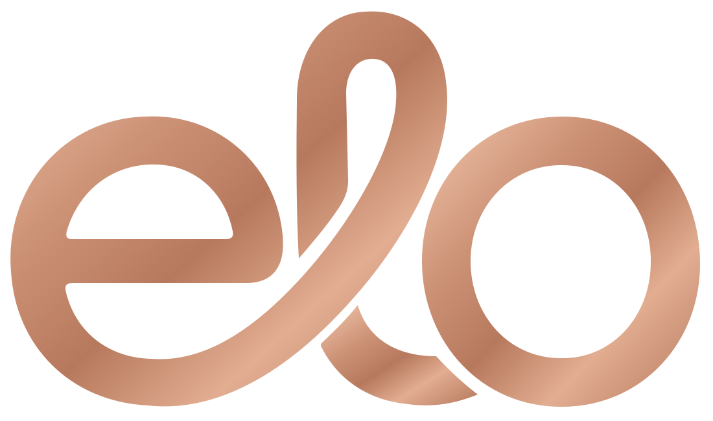
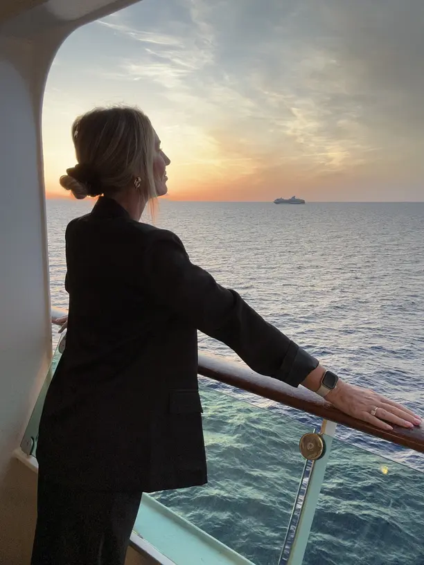
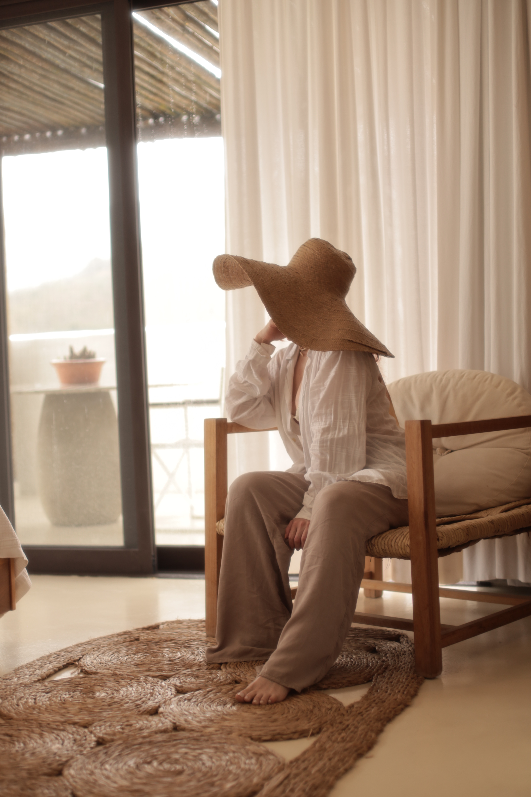
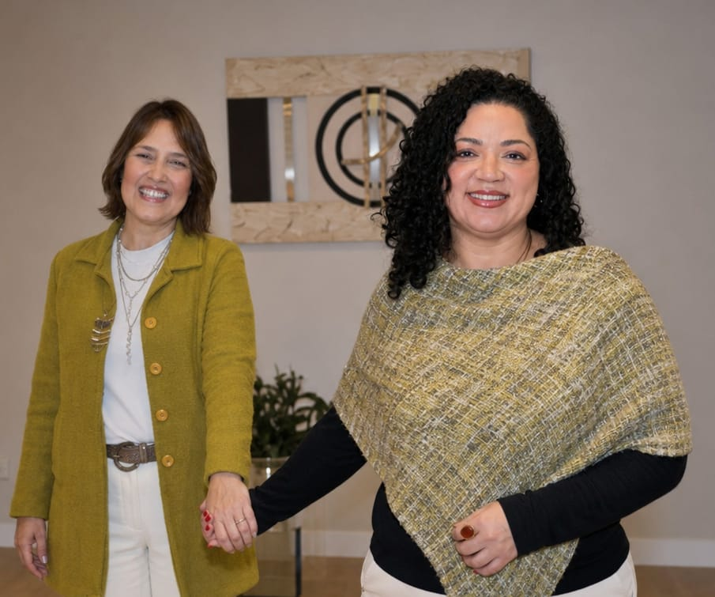

As pessoas mudam. A dinâmica permanece.
Relações diferentes que despertam os mesmos conflitos, as mesmas dúvidas, a mesma sensação.

Vamos conversar ↗JORNADA ELO · INDIVIDUAL & ONLINE
Para a mulher que construiu uma vida — e sente que chegou a hora de compreender o que sustenta certos padrões.
QUERO CONHECER A ELO ↗APRESENTAMOS A ELO
A ELO é um processo individual para mulheres que desejam reconhecer padrões, investigar suas raízes e construir novas formas de agir, se posicionar e escolher.
Um encontro entre a psicologia junguiana e o olhar sistêmico. Duas profissionais que se complementam, dedicadas à mesma história: a sua.
CONHEÇA A JORNADA ↓O QUE CONTINUA SE REPETINDO?
Relações diferentes que despertam os mesmos conflitos, as mesmas dúvidas, a mesma sensação.
O desejo de se posicionar, estabelecer limites e ocupar o espaço que é seu.
Escolhas que parecem automáticas, mesmo quando existe uma vontade sincera de agir diferente.
Depois de diferentes tentativas, permanece a vontade de compreender o que sustenta essa repetição.
UM CONVITE PARA OLHAR DE NOVO
O passado faz parte.
O próximo passo
também é seu.
VOCÊ JÁ TENTOU O SUFICIENTE
Carreira, família, conquistas. Você tem uma história, repertório e consciência sobre a própria vida. Ainda assim, algumas situações parecem levar ao mesmo lugar.
A ELO propõe um espaço para compreender o que sustenta esses padrões — e abrir novas possibilidades de resposta.
CONHEÇA ESSE CAMINHO ↓O QUE A ELO PROPÕE

01 / ORIGEM
Reconhecer experiências, vínculos e aprendizados que contribuíram para formar um padrão. Olhar para a história sem precisar permanecer no mesmo lugar.
02 / CONSCIÊNCIA
Distinguir a reação automática da possibilidade de uma escolha consciente. Reconhecer como o padrão aparece na vida, nas relações e nas decisões.

03 / ESCOLHA
Construir outras formas de responder, estabelecer limites e se colocar diante da vida. Novas referências para continuar escolhendo com consciência.
COMO FUNCIONA
Com começo, meio e fim. Todos online, com reflexões, práticas e acompanhamento entre os encontros.
Acolher sua história e compreender a questão que você deseja transformar.
Investigar vínculos, experiências e contextos que ajudam a compreender a repetição atual.
Três encontros de trabalho individualizado, com recursos escolhidos conforme o que o processo revela.
Construir novas referências para agir, estabelecer limites e fazer escolhas.
Reconhecer recursos e fortalecer as práticas que podem sustentar as mudanças.
Um fechamento significativo, com uma vivência escolhida de acordo com sua história e seu momento.
O TEMPO ENTRE OS ENCONTROS TAMBÉM FAZ PARTE
Reflexões, práticas individuais e áudios de meditação guiada acompanham o processo. Um convite para levar a consciência para a vida que acontece fora dos encontros.
ESTE PODE SER O SEU MOMENTO
UM CAMINHO PARA CADA MOMENTO
A ELO pede disponibilidade para olhar para si e se envolver com o processo. Se você busca uma solução rápida ou um ajuste pontual, talvez este ainda não seja o caminho.
Quando faz sentido começar antes, indicamos a constelação sistêmica individual: um trabalho que Silvia e Claudirene já conduzem juntas desde 2023.
CONVERSAR SOBRE MEU MOMENTO ↗
QUEM CAMINHA COM VOCÊ
PSICOLOGIA JUNGUIANA
Psicóloga · Fundadora do Grupo ELO
Pós-graduada em Psicologia Interativa Transpessoal Junguiana, atende mulheres no Brasil e no exterior. Seu trabalho acolhe sentimentos, símbolos, sonhos e padrões da história pessoal.
Meditadora desde 2007, conduz grupos de mulheres desde 2011. Na ELO, cria e conduz as meditações guiadas e os áudios de reprogramação mental que acompanham o processo.
OLHAR SISTÊMICO
Doutora em Sociologia · Cofundadora do Grupo ELO
Graduada e mestre em Ciências Sociais, doutora em Sociologia. Sua trajetória reúne pesquisa, livros, artigos científicos, cursos, palestras e projetos de políticas públicas.
Nos últimos anos, dedica-se à Constelação Sistêmica e à Análise Sistêmica. Na ELO, seu olhar se volta aos vínculos familiares e aos padrões herdados que ajudam a compreender cada história.
O PRIMEIRO PASSO É UMA CONVERSA
Não é preciso ter todas as respostas. O início existe justamente para compreender o que você traz e avaliar, juntas, se a ELO faz sentido neste momento.
Um primeiro olhar para sua história, sua questão e sua disponibilidade.
Um encontro para nos conhecermos e entendermos o caminho mais adequado.
Se a ELO fizer sentido, seguimos. Se não, orientamos uma alternativa para o seu momento.
SE ESTE FOR O SEU MOMENTO
O primeiro passo é compreender, juntas, se a ELO faz sentido para você.
JORNADA INDIVIDUAL ELO
Sob consulta na conversa de alinhamento.
PARA FICAR MAIS CLARO
Sim. Todos os encontros acontecem online, então a jornada pode ser realizada de qualquer lugar do mundo. A ELO nasceu também para brasileiras que vivem no exterior.
O questionário inicial e a conversa de alinhamento ajudam a avaliar, juntas, se este é o momento e o caminho adequado para você.
Esse tempo é respeitado. Quando apropriado, indicamos a constelação sistêmica individual como caminho anterior à Jornada ELO.
É um processo individual e online, da clareza inicial ao encerramento. As etapas incluem mapeamento da origem, integração, reposicionamento e consolidação, com práticas e acompanhamento entre encontros.
Não. Os recursos são escolhidos pelas profissionais a partir da questão apresentada e do caminho revelado ao longo do processo. Cada mulher tem uma experiência individualizada.
Entre em contato pelo WhatsApp para conhecer o investimento e os detalhes da jornada durante a conversa de alinhamento.
ORIGEM · CONSCIÊNCIA · ESCOLHA
Compreender o que se repete.
Descobrir o que sustenta. Escolher agir diferente.